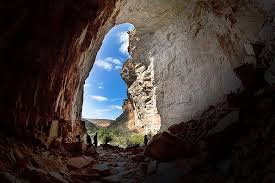

Você recebe de sua mãe a missão: levar a cesta de doces até a casa da vovó. No portão da floresta, precisa decidir por onde ir:
Você escolheu ir pelos campos floridos e encontrou um caçador que se ofereceu a te acompanhar!:

Você escolheu ir para a floresta e um lobo apareceu! Ele está ferido, você irá ajuda-lo?:
Você ajudou o lobo:
Você escolheu aceitar a companhia do caçador:
Você ignorou o lobo, porem, mais lobos apareceram e começaram a te seguir:

Você recusou a companhia do caçador e encontrou uma gruta em busca de um atalho. No fundo haviam dois caminhos, um com uma luz e o outro de onde você percebia uma ventania: